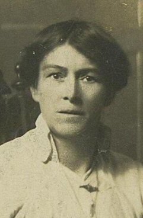
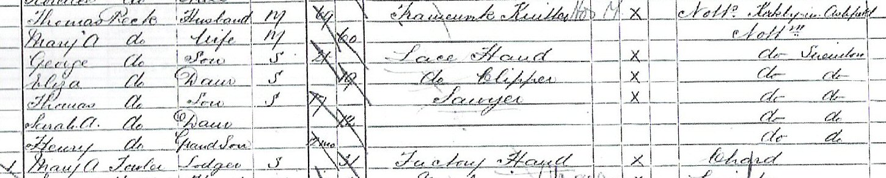
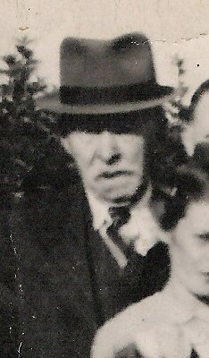

Eliza Peck, 1871 - 1948

Eliza (or Elisa as spellings vary) Peck was born in Pomfret Street, Sneinton, Nottingham in September 1871. She was the daughter of Thomas Peck and Mary Ann (formerly Warren). Thomas was a framework knitter and Mary Ann the daughter of Irish immigrants. Eliza was the oldest daughter of her fathers second marriage and the couple lived in Sneinton.

By 1881 the family had moved to Colton Terrace, Sneinton and Eliza (or Elysa as she appears in the census document) is shown as a 9 year old scholar. By 1891 Eliza is a 19 year old 'lace clipper' employed in one of the many lace factories nearby. Also shown in the house at 13 Bond Street is a lodger by the name of Mary Ann Fowler, the half sister of James Fowler . This probably explains how Eliza was to meet her future husband James and in 1889 the two of them have a son, Harry Peck (later known as Harry Fowler). They were married in October 1901 at St Albans, Sneinton.

Following their marriage James and Eliza Fowler continued to live with the Peck's but at some point in the 1890's they moved closer to the Fowlers who lived in Loughborough. In 1896 James leaves Eliza and their four children and Eliza returns to Nottingham, probably to be closer to her family for support. In 1901 they are living at 107 Manvers Street. James Fowler was a railway worker, painting signals and bridges, probably for the Midland Railway after his departure in 1896 he disappears and is not found in later census returns. Nor has his death been traced.
At some point between 1896 and 1902 Eliza meets John Whitaker , a gas worker, and it is presumed that Eliza's next three children are fathered by John, despite the fact that James is declared on each of their birth certificates as the father. DNA testing has confirmed that John is the father of May Fowler and it is highly likely that he was also father to John (Jack) and Horace. It appears that John continued to live at his mothers address and in 1909 he dies.
By 1911 Eliza and the family have moved to Stanley Terrace, Eldon Street, Sneinton. Eliza is head of household and is supporting the family through laceworking at home. She is supported by her two working sons Harry and Bertie, but also looking after her eighty year old mother, Mary Ann Peck. It was during this period that she tragically lost her youngest son Horace at just 6 years of age in 1913.
Eliza was left to raise seven children on her own and did so supplementing her income as housekeeper for widowed baker, Harry Clark. She eventually married Harry in April 1915. Eliza also outlived her son Bertie Fowler who was killed during the First World War, at Ypres in 1917.

Eliza died as Eliza Clarke in 1948 aged 76 and she was outlived by Harry.